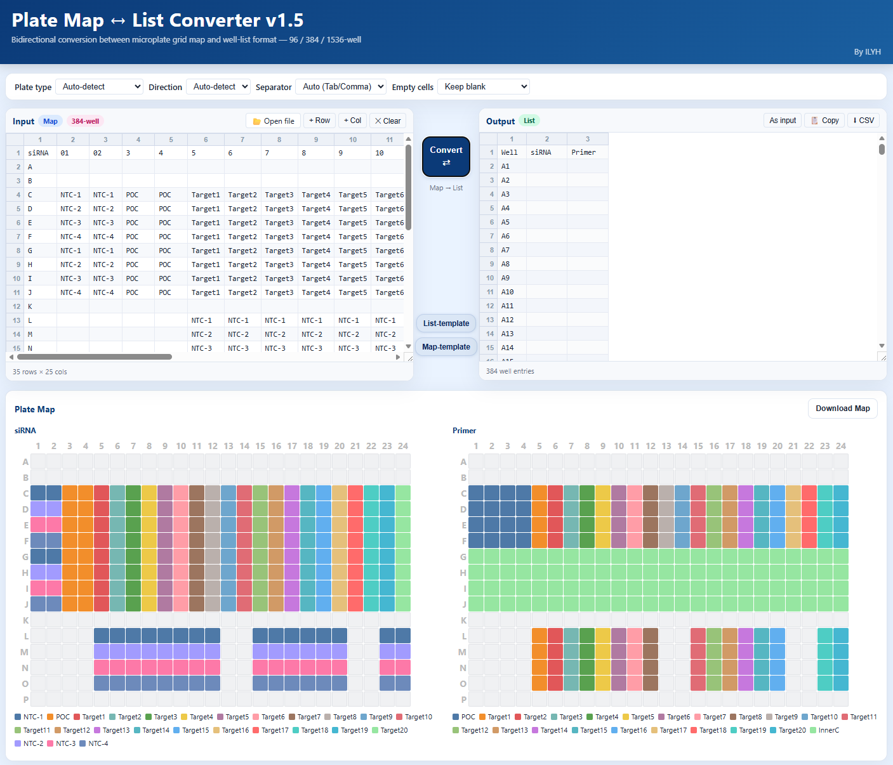

1How it works
Step 1
Upload plate map or list
Drop a CSV/Excel file in either matrix (rows × columns) or long-list (well, value) layout. The format is auto-detected.
Step 2
Pick plate format & direction
Choose 96-well or 384-well; toggle map → list or list → map. Custom templates can be saved for re-use.
Step 3
Preview & validate
Inspect the converted output side-by-side with the input; missing wells and duplicate IDs are highlighted before export.
Step 4
Export CSV / Excel
Copy to clipboard, or download as CSV / Excel for downstream pipeline use.
2Preview
Convert between plate map and list
Drag-and-drop a CSV or Excel file. The tool auto-detects matrix vs. long-list layout, lets you pick 96/384-well format and row- or column-major fill order, then exports the converted output to CSV / Excel or directly to the clipboard.
